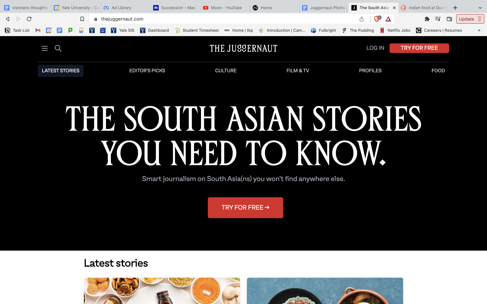
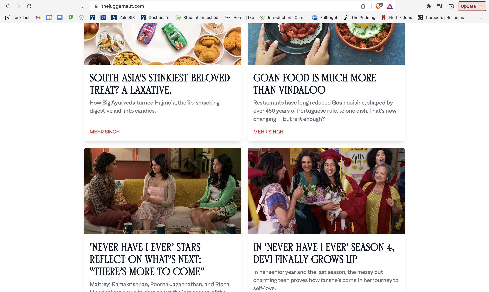
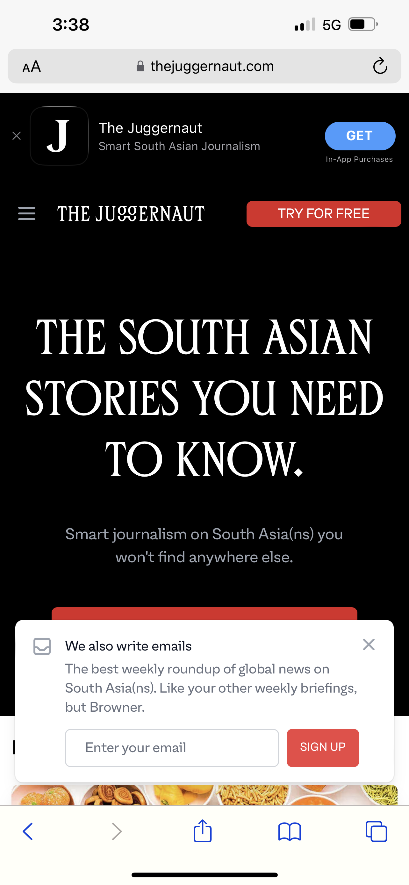
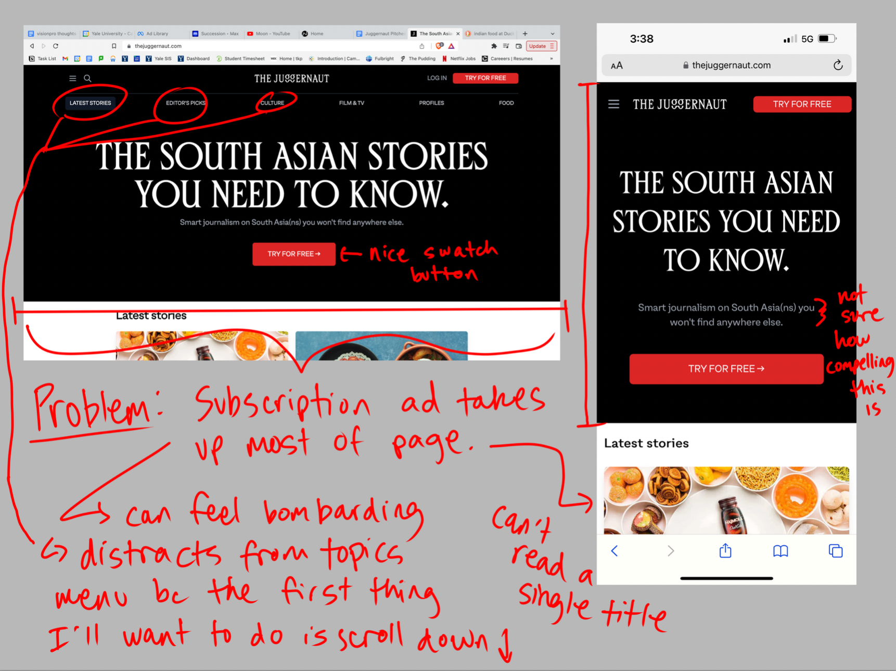
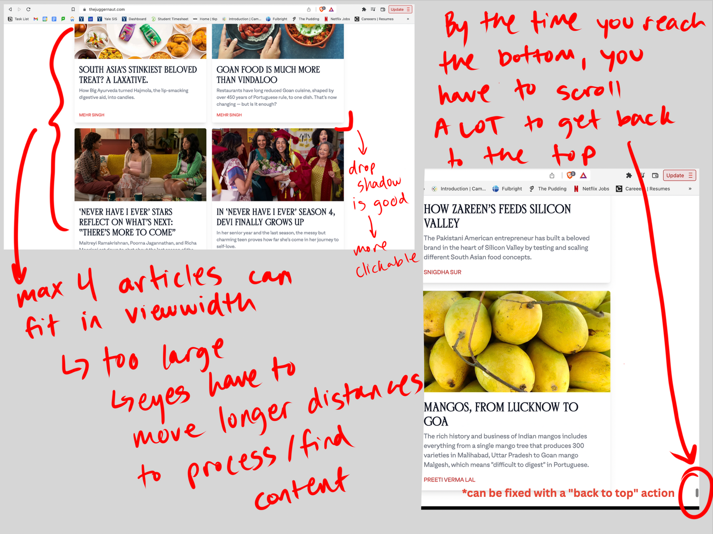
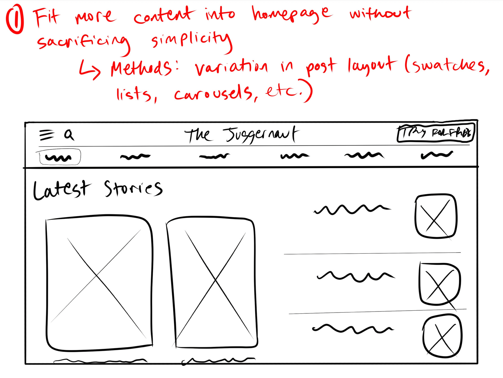
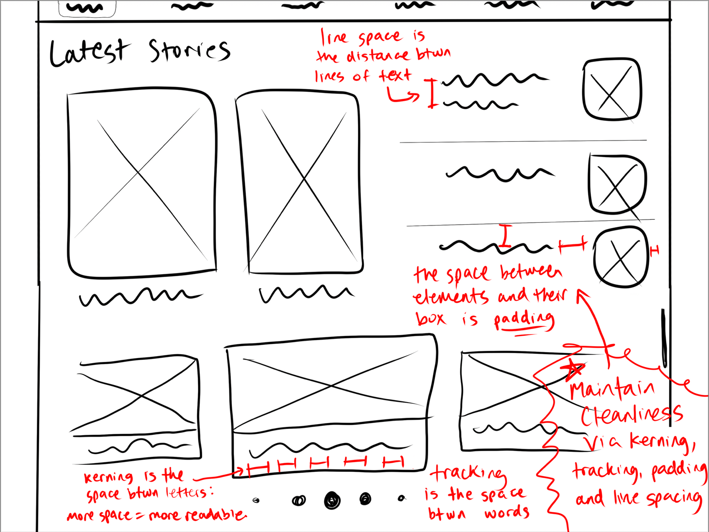
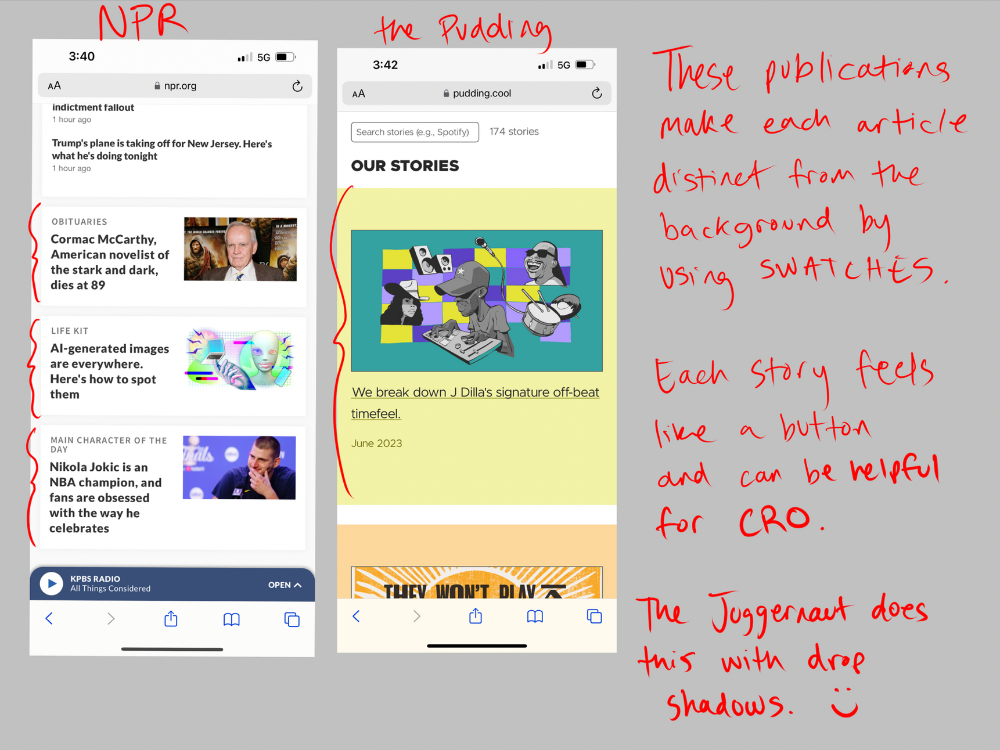
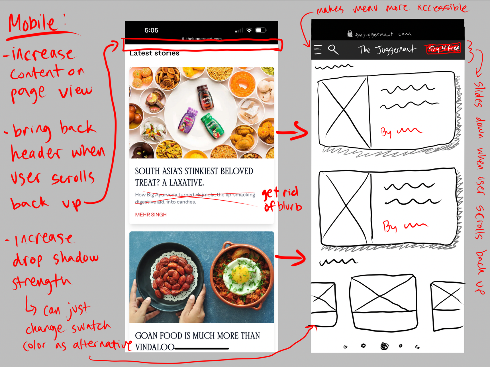

The Juggernaut Homepage Redesign
Tools: Figma, Procreate
I redesigned the homepage for The Juggernaut, a South Asian publication, across both mobile and desktop platforms. The project focused on improving content discoverability and user engagement while maintaining the publication's distinctive editorial voice and brand identity.
BEFORE:
The original site was quite straightforward. It had a giant header on top with a call-to-action for users to subscribe. The rest of the homepage was a 2 x ∞ grid of all of the articles, with no categorisation or filter view. The first things that caught my attention were the header (which was so big on mobile that it blocked all the articles below) and the inefficient use of space (only 2 article blocks were fully visible at one time).




The project began with a thorough analysis of the site's existing UX, identifying specific opportunities for improvement and user pain points. My research phase involved studying successful publication sites, particularly those the client admired, to understand effective content presentation patterns.
This competitive analysis helped inform decisions about which elements to retain, modify, or completely reimagine for optimal user experience.






Using Figma, I developed wireframes that addressed the identified UX challenges while maintaining The Juggernaut's distinctive editorial voice. The final designs incorporated the publication's existing brand kit to ensure visual consistency, resulting in a polished and cohesive user experience.
Impact: The redesigned homepage successfully improved content organization and user navigation flow. The new design system better showcases The Juggernaut's high-quality journalism while making content more discoverable for readers.
You can see the implemented design at The Juggernaut's website today, where it continues to serve thousands of readers interested in South Asian stories and perspectives.